-
SETUP: Launch Browser and go to application
17:27:36 PM / 157.043 secs
#test-id=1SETUP: Launch Browser and go to application
02.03.2025 17:27:36 02.03.2025 17:30:13 157.043 secsReport-Algorithms-And-Patient-Query-Service.featureSETUP: Launch Browser and go to applicationStatus Timestamp Details Pass 5:27:37 PM User launched chrome
User launched chromePass 5:27:43 PM User go to application https://pharmacist-dev.arine.io/
User go to application https://pharmacist-dev.arine.io/Pass 5:30:10 PM User login with user: pharmacist-dev@mailinator.com and password: *********
User login with user: pharmacist-dev@mailinator.com and password: *********Pass 5:30:13 PM Verify Login Success
Verify Login Success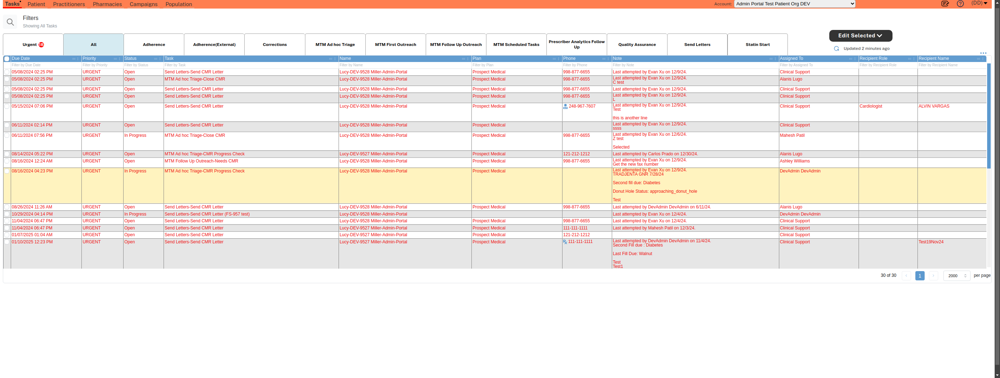 -
Verify_Algorithms_and_Patient_Recommendations_in_the_log_action_modal_from_Report_History
17:30:13 PM / 1,083.977 secs
#test-id=2Verify_Algorithms_and_Patient_Recommendations_in_the_log_action_modal_from_Report_History
02.03.2025 17:30:13 02.03.2025 17:48:17 1,083.977 secsReport-Algorithms-And-Patient-Query-Service.featureVerify_Algorithms_and_Patient_Recommendations_in_the_log_action_modal_from_Report_HistoryStatus Timestamp Details Pass 5:30:40 PM User select organization: 'Admin Portal Test Patient Org DEV'
User select organization: 'Admin Portal Test Patient Org DEV'Pass 5:30:43 PM Click on Practitioners Tab
Click on Practitioners TabPass 5:31:10 PM User search practitioner by npi: 2323232323
User search practitioner by npi: 2323232323Pass 5:31:27 PM Wait to page load
Wait to page loadPass 5:32:00 PM Click on button 'Follow Up' which is in campaigns button
Click on button 'Follow Up' which is in campaigns buttonPass 5:32:35 PM User select campaigns value as: Test Campaign 3
User select campaigns value as: Test Campaign 3Pass 5:32:46 PM Remove all previous applied filters from the campaigns tab by clicking the buttonClear Filters
Remove all previous applied filters from the campaigns tab by clicking the buttonClear Filters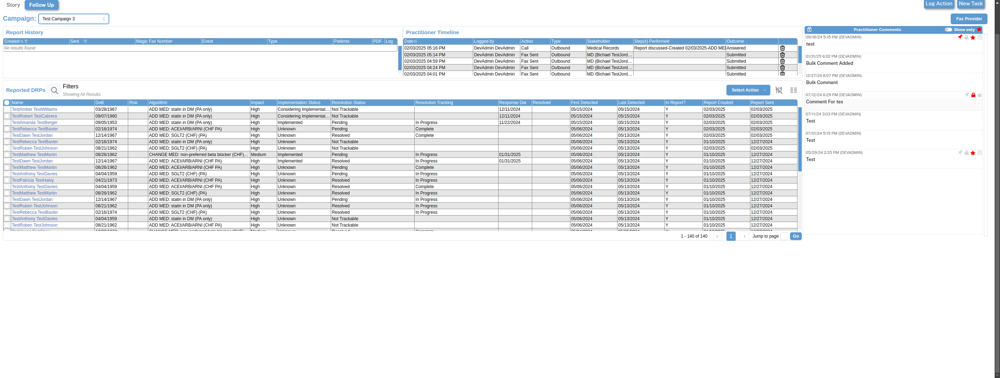Pass 5:33:20 PM Select reported drp table filter 'Patient First Name' as 'TestAlex' and click on 'Apply' button
Select reported drp table filter 'Patient First Name' as 'TestAlex' and click on 'Apply' buttonPass 5:33:55 PM Select reported drp table filter 'Algorithm' as 'ADD MED: ACEI/ARB/ARNI (CHF PA)' and click on 'Apply' button
Select reported drp table filter 'Algorithm' as 'ADD MED: ACEI/ARB/ARNI (CHF PA)' and click on 'Apply' button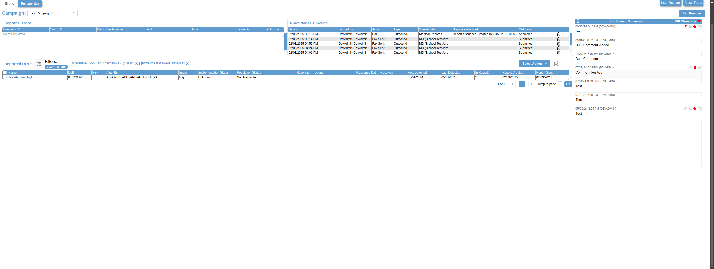Pass 5:33:55 PM Select records on Reported DRPS Table values
Select records on Reported DRPS Table values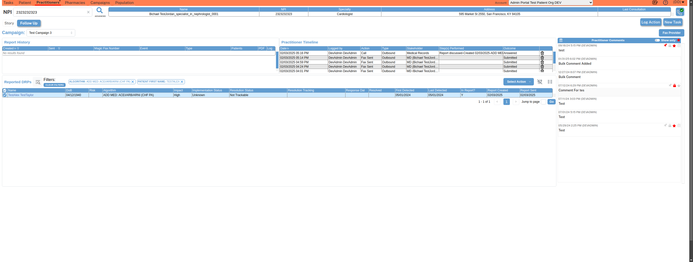Pass 5:33:55 PM User extracts patients Algorithmcolumn data for respective patient[TestAlex TestTaylor]
User extracts patients Algorithmcolumn data for respective patient[TestAlex TestTaylor]Pass 5:34:13 PM Remove all previous applied filters from the campaigns tab by clicking the buttonClear Filters
Remove all previous applied filters from the campaigns tab by clicking the buttonClear Filters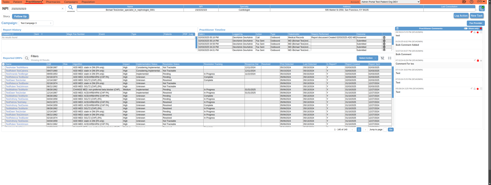Pass 5:34:47 PM Select reported drp table filter 'Patient First Name' as 'TestRuben' and click on 'Apply' button
Select reported drp table filter 'Patient First Name' as 'TestRuben' and click on 'Apply' button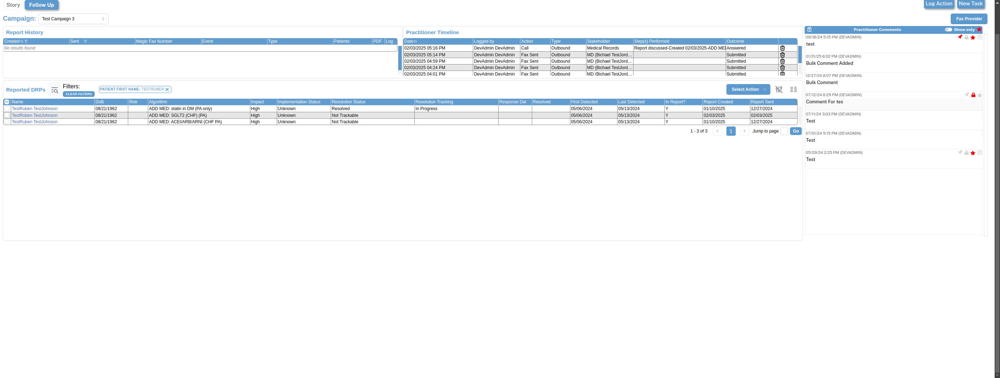Pass 5:35:23 PM Select reported drp table filter 'Algorithm' as 'ADD MED: SGLT2 (CHF) (PA)' and click on 'Apply' button
Select reported drp table filter 'Algorithm' as 'ADD MED: SGLT2 (CHF) (PA)' and click on 'Apply' button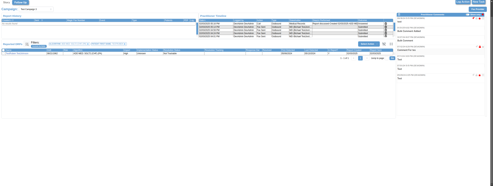Pass 5:35:24 PM Select records on Reported DRPS Table values
Select records on Reported DRPS Table valuesPass 5:35:24 PM User extracts patients Algorithmcolumn data for respective patient[TestRuben TestJohnson]
User extracts patients Algorithmcolumn data for respective patient[TestRuben TestJohnson]Pass 5:35:41 PM Remove all previous applied filters from the campaigns tab by clicking the buttonClear Filters
Remove all previous applied filters from the campaigns tab by clicking the buttonClear Filters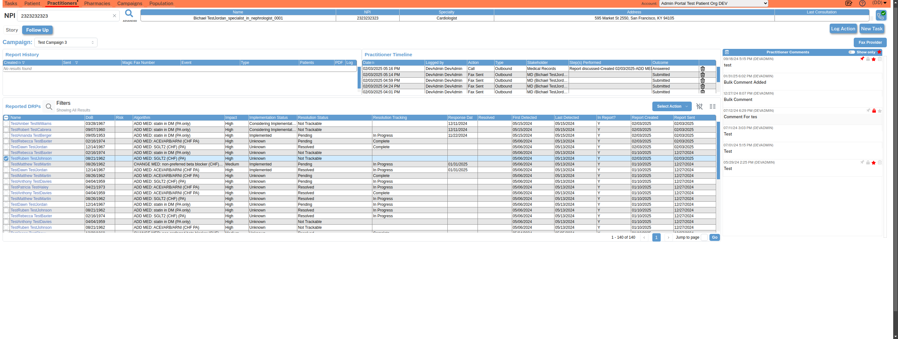Pass 5:36:17 PM Select reported drp table filter 'Patient First Name' as 'TestAmanda' and click on 'Apply' button
Select reported drp table filter 'Patient First Name' as 'TestAmanda' and click on 'Apply' button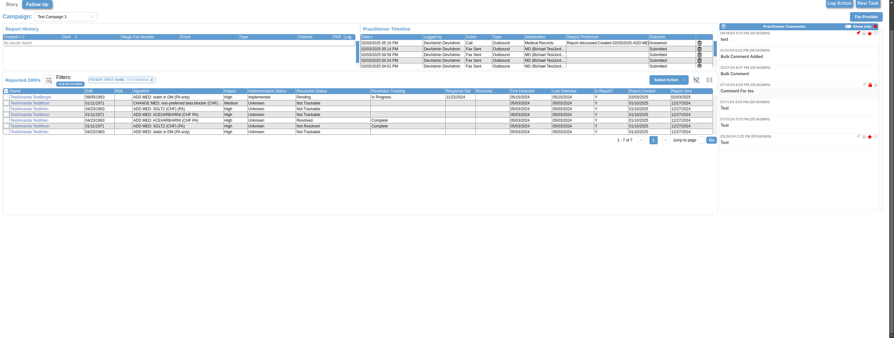Pass 5:36:53 PM Select reported drp table filter 'Algorithm' as 'ADD MED: statin in DM (PA only)' and click on 'Apply' button
Select reported drp table filter 'Algorithm' as 'ADD MED: statin in DM (PA only)' and click on 'Apply' button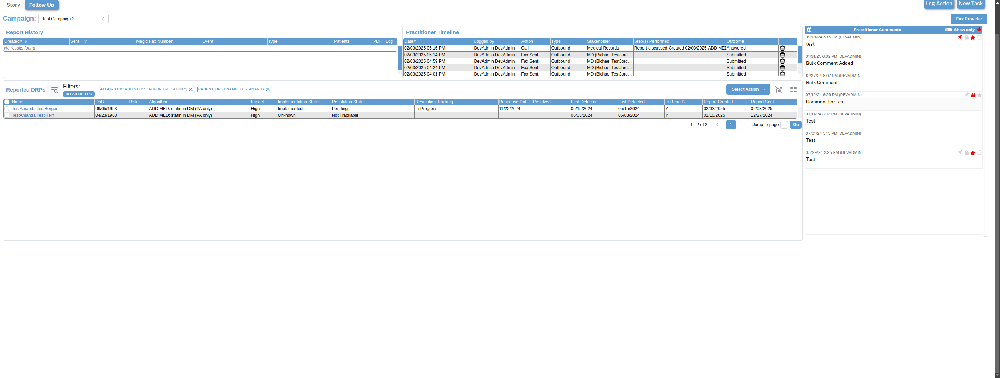Pass 5:36:53 PM Select records on Reported DRPS Table values
Select records on Reported DRPS Table values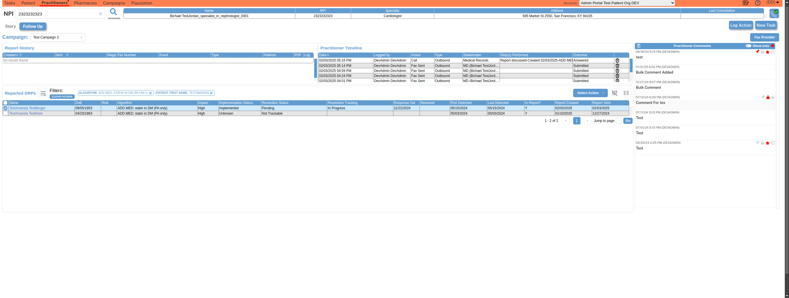Pass 5:36:53 PM User extracts patients Algorithmcolumn data for respective patient[TestAmanda TestBerger]
User extracts patients Algorithmcolumn data for respective patient[TestAmanda TestBerger]Pass 5:37:11 PM Remove all previous applied filters from the campaigns tab by clicking the buttonClear Filters
Remove all previous applied filters from the campaigns tab by clicking the buttonClear FiltersPass 5:37:11 PM Fax Provider Button is Enabled
Fax Provider Button is EnabledPass 5:37:39 PM Click on button: 'Fax Provider'
Click on button: 'Fax Provider'Pass 5:37:40 PM User select DRP option 'Selected DRPs' for follow up fax
User select DRP option 'Selected DRPs' for follow up fax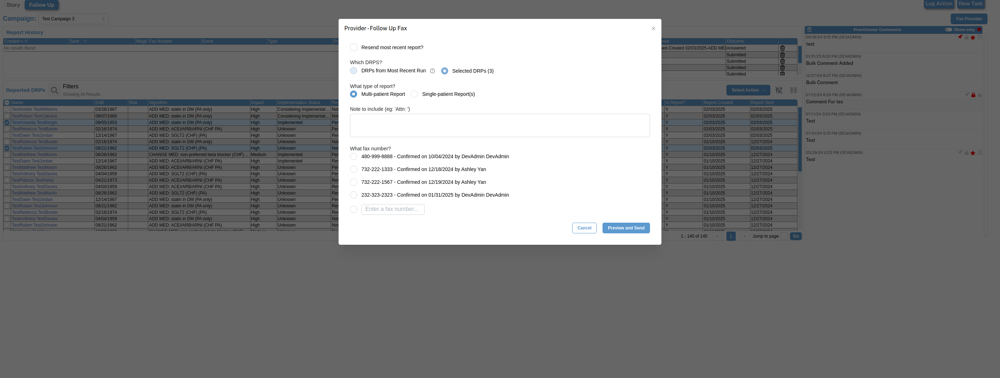Pass 5:37:40 PM User select type of report: 'Multi-patient Report'
User select type of report: 'Multi-patient Report'Pass 5:37:41 PM Enter fax number '232-323-2323' in input and select that fax number
Enter fax number '232-323-2323' in input and select that fax number
Pass 5:38:17 PM Click on button 'Preview and Send' which is in campaigns button
Click on button 'Preview and Send' which is in campaigns buttonPass 5:38:28 PM Verify report viewer
Verify report viewer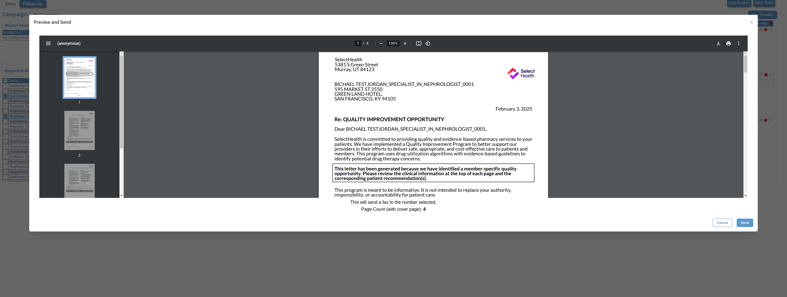Pass 5:39:01 PM Click on button 'Send' which is in campaigns button
Click on button 'Send' which is in campaigns buttonPass 5:39:17 PM Wait to page load
Wait to page loadPass 5:39:34 PM Verify user able to enable column filter modes and search ' Current Date ' for Report History Table
Verify user able to enable column filter modes and search ' Current Date ' for Report History Table
Pass 5:39:52 PM Verify user able to enable column filter modes and search ' Queued ' for Report History Table
Verify user able to enable column filter modes and search ' Queued ' for Report History Table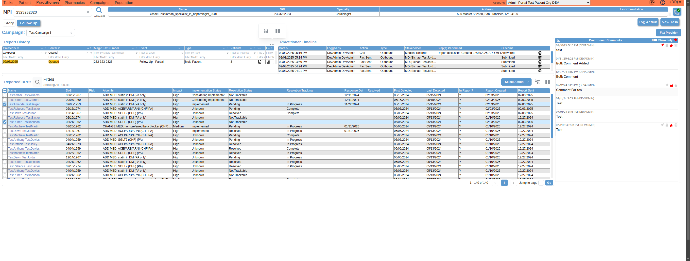Pass 5:39:53 PM Verify the sent column status of report history table
Verify the sent column status of report history tablePass 5:39:53 PM Verify recently faxed log date will be displayed last in the report history table and Patients column contains 3 value
Verify recently faxed log date will be displayed last in the report history table and Patients column contains 3 value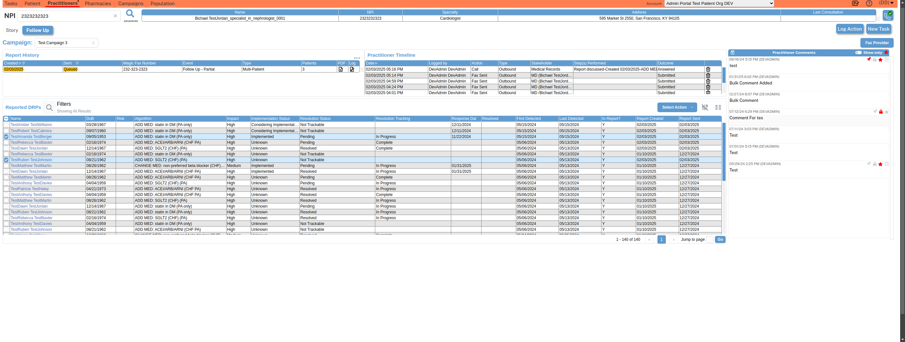Pass 5:40:10 PM Click on first records pdf icon from report history table
Click on first records pdf icon from report history table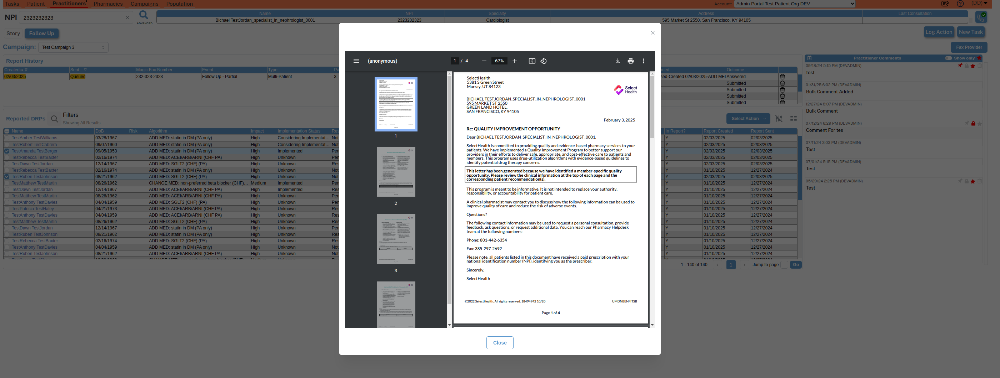Pass 5:40:20 PM Verify report viewer
Verify report viewerPass 5:40:28 PM Verify report contains: 'TESTALEX TESTTAYLOR'
SelectHealth 5381 S Green Street Murray
UT 84123 ©2022 SelectHealth. All rights reserved. 18494942 10/20 UMDNBENFITSB BICHAEL TESTJORDAN_SPECIALIST_IN_NEPHROLOGIST_0001 595 MARKET ST 2550 GREEN LAND HOTEL
SAN FRANCISCO
KY 94105 February 3
2025 Re: QUALITY IMPROVEMENT OPPORTUNITY Dear BICHAEL TESTJORDAN_SPECIALIST_IN_NEPHROLOGIST_0001
SelectHealth is committed to providing quality and evidence-based pharmacy services to your patients. We have implemented a Quality Improvement Program to better support our providers in their efforts to deliver safe
appropriate
and cost-effective care to patients and members. This program uses drug-utilization algorithms with evidence-based guidelines to identify potential drug therapy concerns. This letter has been generated because we have identified a member-specific quality opportunity. Please review the clinical information at the top of each page and the corresponding patient recommendation(s). This program is meant to be informative. It is not intended to replace your authority
responsibility
or accountability for patient care. A clinical pharmacist may contact you to discuss how the following information can be used to improve quality of care and reduce the risk of adverse events. Questions? The following contact information may be used to request a personal consultation
provide feedback
ask questions
or request additional data. You can reach our Pharmacy Helpdesk team at the following numbers: Phone: 801-442-6354 Fax: 385-297-2692 Please note
all patients listed in this document have received a paid prescription with your national identification number (NPI)
identifying you as the prescriber. Sincerely
SelectHealth Page 1 of 4 ©2022 SelectHealth. All rights reserved. 18494942 10/20 UMDNBENFITSB ADD MED: ACEI/ARB/ARNI in CHF Clinical Considerations: Potential Actions: • Our records indicate that the patients below have a diagnosis of heart failure with reduced ejection fraction (HFrEF) and do not have a recent fill of an angiotensin-converting enzyme inhibitor (ACEI)
angiotensin-receptor blocker (ARB)
or angiotensin receptor-neprilysin inhibitor (ARNI). • Per the ACC/AHA clinical practice guideline
all patients with HFrEF should be on an ACEI
ARB
or ARNI therapy to reduce morbidity and mortality
decrease hospitalizations
and improve symptoms and overall clinical status.1 • Specifically
therapy with an ARNI is preferred in patients with HFrEF and in those with New York Heart Association (NYHA) class II to III symptoms due to their effects on cardiac reverse remodeling.1
2 • In patients with previous or current symptoms of chronic HFrEF
the use of an ACEI or ARB is beneficial when the use of an ARNI is not feasible.1 • Please consider initiating an ARNI such as SACUBITRIL-VALSARTAN (ENTRESTO) 24-26 mg orally twice daily and titrating to a target maintenance dose of 97-103 mg twice daily
as tolerated by the patient. • If an ARNI cannot be tolerated
please consider initiating LISINOPRIL 2.5 mg daily and titrating to a target maintenance dose of 20 mg daily. • Monitor blood pressure
electrolytes
and renal function within 1-2 weeks of therapy initiation and dose titration. References: 1. Heidenreich PA
Bozkurt B
Aguilar D
et al. 2022 AHA/ACC/HFSA guideline for the management of heart failure: a report of the American College of Cardiology/American Heart Association Joint Committee on Clinical Practice Guidelines. Circulation. 2022;145(18):e895-e1032. doi: 10.1161/CIR.0000000000001063. 2. Wang Y
Zhou R
Lu C
et al. Effects of the angiotensin-receptor neprilysin inhibitor on cardiac reverse remodeling: meta-analysis. J Am Heart Assoc. 2019;8(13):e012272. doi: 10.1161/JAHA.119.012272. Epub 2019 Jun 26. Patient Name Birth Date TESTALEX TESTTAYLOR 1940-04-12 Page 2 of 4 ©2022 SelectHealth. All rights reserved. 18494942 10/20 UMDNBENFITSB Statin Use in Persons with Diabetes (SUPD) Clinical Considerations: Potential Actions: • Our records indicate the patients below have a diagnosis of diabetes and are not taking a statin. • For secondary prevention
patients of all ages with diabetes and ASCVD are recommended to be on a high-intensity statin or maximally tolerated statin.1 • For primary prevention
patients with diabetes aged 40-75 who have one or more risk factors for ASCVD (hypertension
smoking
CKD/albuminuria
obesity
or family history of premature ASCVD) it is recommended to initiate a high intensity statin.1 • For diabetic patients without ASCVD or additional risk factors for ASCVD
a moderate intensity statin is recommended.1 • Consider starting the appropriate statin therapy
based on comorbidities and tolerance to therapy. • For patients hesitant to retrial a statin
consider a statin rechallenge after a drug holiday (e.g. lower dose
alternative dosing schedule
a different statin). Past side effects may have been related to a specific statin or other exacerbating factors rather than to the entire statin class.2
3 • • Additionally
according to the PRIMO study
pravastatin is associated with less myopathy than other statins.4 References: 1. American Diabetes Association Professional Practice Committee. Standards of Care in Diabetes-2024. Diabetes Care. 2024;47(Supplement_1):S1-S308. 2. Fitchett DH
Hegele RA
and Verma S. Statin intolerance. Circulation. 2015;131(13):e389-e391. 3. Mampuya WM
Frid D
Rocco M
et al. Treatment strategies in patients with statin intolerance: The Cleveland Clinic experience. Am Heart J. 2013;166:597-603. 4. Bruckert E
Hayem G
Dejager S
Yau C
Bégaud B. Mild to moderate muscular symptoms with high-dosage statin therapy in hyperlipidemic patients--the PRIMO study. Cardiovasc Drugs Ther. 2005 Dec;19(6):403-14. Patient Name Birth Date TESTAMANDA TESTBERGER 1953-09-05 Page 3 of 4 ©2022 SelectHealth. All rights reserved. 18494942 10/20 UMDNBENFITSB Add Med: SGLT2 Inhibitor for Patients with CHF Clinical Considerations: Potential Actions: • Our records indicate that the patients below have a diagnosis of heart failure and are not taking a SGLT2 Inhibitor. • Two landmark trials
DAPA-HF and EMPEROR-Reduced
demonstrated morbidity and mortality benefits of DAPAGLIFLOZIN and EMPAGLIFLOZIN
respectively
in patients with HFrEF in NYHA class II-IV
regardless of whether they had diabetes.1
2 • For patients with heart failure with mildly reduced ejection fraction (LVEF 41-49%) SGLT2 inhibitors (specifically EMPAGLIFLOZIN in the EMPEROR-Preserved trial) have been shown to reduce hospitalizations and cardiovascular mortality.2 • Please consider initiating a SGLT2 inhibitor such as DAPAGLIFLOZIN or EMPAGLIFLOZIN if the patient meets the renal threshold of eGFR ≥ 30 ml/min/1.73m2 for DAPAGLIFLOZIN and eGFR ≥ 20 ml/min/1.73m2 for EMPAGLIFLOZIN. References: 1. Maddox T
Januzzi J
Allen L
et al. 2021 Update to the 2017 ACC Expert Consensus Decision Pathway for Optimization of Heart Failure Treatment: Answers to 10 Pivotal Issues About Heart Failure With Reduced Ejection Fraction. J Am Coll Cardiol. 2021 Feb
77 (6) 772–810. https://doi.org/10.1016/j.jacc.2020.11.022 2. Heidenreich PA
Bozkurt B
Aguilar D
et al. 2022 AHA/ACC/HFSA Guideline for the Management of Heart Failure: A Report of the American College of Cardiology/American Heart Association Joint Committee on Clinical Practice Guidelines [published correction appears in Circulation. 2022 May 3;145(18):e1033] [published correction appears in Circulation. 2022 Sep 27;146(13):e185]. Circulation. 2022;145(18):e895-e1032. doi:10.1161/CIR.0000000000001063 Patient Name Birth Date TESTRUBEN TESTJOHNSON 1962-08-21 Page 4 of 4Pass 5:40:35 PM Verify report contains: 'TESTRUBEN TESTJOHNSON'
SelectHealth 5381 S Green Street Murray
UT 84123 ©2022 SelectHealth. All rights reserved. 18494942 10/20 UMDNBENFITSB BICHAEL TESTJORDAN_SPECIALIST_IN_NEPHROLOGIST_0001 595 MARKET ST 2550 GREEN LAND HOTEL
SAN FRANCISCO
KY 94105 February 3
2025 Re: QUALITY IMPROVEMENT OPPORTUNITY Dear BICHAEL TESTJORDAN_SPECIALIST_IN_NEPHROLOGIST_0001
SelectHealth is committed to providing quality and evidence-based pharmacy services to your patients. We have implemented a Quality Improvement Program to better support our providers in their efforts to deliver safe
appropriate
and cost-effective care to patients and members. This program uses drug-utilization algorithms with evidence-based guidelines to identify potential drug therapy concerns. This letter has been generated because we have identified a member-specific quality opportunity. Please review the clinical information at the top of each page and the corresponding patient recommendation(s). This program is meant to be informative. It is not intended to replace your authority
responsibility
or accountability for patient care. A clinical pharmacist may contact you to discuss how the following information can be used to improve quality of care and reduce the risk of adverse events. Questions? The following contact information may be used to request a personal consultation
provide feedback
ask questions
or request additional data. You can reach our Pharmacy Helpdesk team at the following numbers: Phone: 801-442-6354 Fax: 385-297-2692 Please note
all patients listed in this document have received a paid prescription with your national identification number (NPI)
identifying you as the prescriber. Sincerely
SelectHealth Page 1 of 4 ©2022 SelectHealth. All rights reserved. 18494942 10/20 UMDNBENFITSB ADD MED: ACEI/ARB/ARNI in CHF Clinical Considerations: Potential Actions: • Our records indicate that the patients below have a diagnosis of heart failure with reduced ejection fraction (HFrEF) and do not have a recent fill of an angiotensin-converting enzyme inhibitor (ACEI)
angiotensin-receptor blocker (ARB)
or angiotensin receptor-neprilysin inhibitor (ARNI). • Per the ACC/AHA clinical practice guideline
all patients with HFrEF should be on an ACEI
ARB
or ARNI therapy to reduce morbidity and mortality
decrease hospitalizations
and improve symptoms and overall clinical status.1 • Specifically
therapy with an ARNI is preferred in patients with HFrEF and in those with New York Heart Association (NYHA) class II to III symptoms due to their effects on cardiac reverse remodeling.1
2 • In patients with previous or current symptoms of chronic HFrEF
the use of an ACEI or ARB is beneficial when the use of an ARNI is not feasible.1 • Please consider initiating an ARNI such as SACUBITRIL-VALSARTAN (ENTRESTO) 24-26 mg orally twice daily and titrating to a target maintenance dose of 97-103 mg twice daily
as tolerated by the patient. • If an ARNI cannot be tolerated
please consider initiating LISINOPRIL 2.5 mg daily and titrating to a target maintenance dose of 20 mg daily. • Monitor blood pressure
electrolytes
and renal function within 1-2 weeks of therapy initiation and dose titration. References: 1. Heidenreich PA
Bozkurt B
Aguilar D
et al. 2022 AHA/ACC/HFSA guideline for the management of heart failure: a report of the American College of Cardiology/American Heart Association Joint Committee on Clinical Practice Guidelines. Circulation. 2022;145(18):e895-e1032. doi: 10.1161/CIR.0000000000001063. 2. Wang Y
Zhou R
Lu C
et al. Effects of the angiotensin-receptor neprilysin inhibitor on cardiac reverse remodeling: meta-analysis. J Am Heart Assoc. 2019;8(13):e012272. doi: 10.1161/JAHA.119.012272. Epub 2019 Jun 26. Patient Name Birth Date TESTALEX TESTTAYLOR 1940-04-12 Page 2 of 4 ©2022 SelectHealth. All rights reserved. 18494942 10/20 UMDNBENFITSB Statin Use in Persons with Diabetes (SUPD) Clinical Considerations: Potential Actions: • Our records indicate the patients below have a diagnosis of diabetes and are not taking a statin. • For secondary prevention
patients of all ages with diabetes and ASCVD are recommended to be on a high-intensity statin or maximally tolerated statin.1 • For primary prevention
patients with diabetes aged 40-75 who have one or more risk factors for ASCVD (hypertension
smoking
CKD/albuminuria
obesity
or family history of premature ASCVD) it is recommended to initiate a high intensity statin.1 • For diabetic patients without ASCVD or additional risk factors for ASCVD
a moderate intensity statin is recommended.1 • Consider starting the appropriate statin therapy
based on comorbidities and tolerance to therapy. • For patients hesitant to retrial a statin
consider a statin rechallenge after a drug holiday (e.g. lower dose
alternative dosing schedule
a different statin). Past side effects may have been related to a specific statin or other exacerbating factors rather than to the entire statin class.2
3 • • Additionally
according to the PRIMO study
pravastatin is associated with less myopathy than other statins.4 References: 1. American Diabetes Association Professional Practice Committee. Standards of Care in Diabetes-2024. Diabetes Care. 2024;47(Supplement_1):S1-S308. 2. Fitchett DH
Hegele RA
and Verma S. Statin intolerance. Circulation. 2015;131(13):e389-e391. 3. Mampuya WM
Frid D
Rocco M
et al. Treatment strategies in patients with statin intolerance: The Cleveland Clinic experience. Am Heart J. 2013;166:597-603. 4. Bruckert E
Hayem G
Dejager S
Yau C
Bégaud B. Mild to moderate muscular symptoms with high-dosage statin therapy in hyperlipidemic patients--the PRIMO study. Cardiovasc Drugs Ther. 2005 Dec;19(6):403-14. Patient Name Birth Date TESTAMANDA TESTBERGER 1953-09-05 Page 3 of 4 ©2022 SelectHealth. All rights reserved. 18494942 10/20 UMDNBENFITSB Add Med: SGLT2 Inhibitor for Patients with CHF Clinical Considerations: Potential Actions: • Our records indicate that the patients below have a diagnosis of heart failure and are not taking a SGLT2 Inhibitor. • Two landmark trials
DAPA-HF and EMPEROR-Reduced
demonstrated morbidity and mortality benefits of DAPAGLIFLOZIN and EMPAGLIFLOZIN
respectively
in patients with HFrEF in NYHA class II-IV
regardless of whether they had diabetes.1
2 • For patients with heart failure with mildly reduced ejection fraction (LVEF 41-49%) SGLT2 inhibitors (specifically EMPAGLIFLOZIN in the EMPEROR-Preserved trial) have been shown to reduce hospitalizations and cardiovascular mortality.2 • Please consider initiating a SGLT2 inhibitor such as DAPAGLIFLOZIN or EMPAGLIFLOZIN if the patient meets the renal threshold of eGFR ≥ 30 ml/min/1.73m2 for DAPAGLIFLOZIN and eGFR ≥ 20 ml/min/1.73m2 for EMPAGLIFLOZIN. References: 1. Maddox T
Januzzi J
Allen L
et al. 2021 Update to the 2017 ACC Expert Consensus Decision Pathway for Optimization of Heart Failure Treatment: Answers to 10 Pivotal Issues About Heart Failure With Reduced Ejection Fraction. J Am Coll Cardiol. 2021 Feb
77 (6) 772–810. https://doi.org/10.1016/j.jacc.2020.11.022 2. Heidenreich PA
Bozkurt B
Aguilar D
et al. 2022 AHA/ACC/HFSA Guideline for the Management of Heart Failure: A Report of the American College of Cardiology/American Heart Association Joint Committee on Clinical Practice Guidelines [published correction appears in Circulation. 2022 May 3;145(18):e1033] [published correction appears in Circulation. 2022 Sep 27;146(13):e185]. Circulation. 2022;145(18):e895-e1032. doi:10.1161/CIR.0000000000001063 Patient Name Birth Date TESTRUBEN TESTJOHNSON 1962-08-21 Page 4 of 4Pass 5:40:43 PM Verify report contains: 'TESTAMANDA TESTBERGER'
SelectHealth 5381 S Green Street Murray
UT 84123 ©2022 SelectHealth. All rights reserved. 18494942 10/20 UMDNBENFITSB BICHAEL TESTJORDAN_SPECIALIST_IN_NEPHROLOGIST_0001 595 MARKET ST 2550 GREEN LAND HOTEL
SAN FRANCISCO
KY 94105 February 3
2025 Re: QUALITY IMPROVEMENT OPPORTUNITY Dear BICHAEL TESTJORDAN_SPECIALIST_IN_NEPHROLOGIST_0001
SelectHealth is committed to providing quality and evidence-based pharmacy services to your patients. We have implemented a Quality Improvement Program to better support our providers in their efforts to deliver safe
appropriate
and cost-effective care to patients and members. This program uses drug-utilization algorithms with evidence-based guidelines to identify potential drug therapy concerns. This letter has been generated because we have identified a member-specific quality opportunity. Please review the clinical information at the top of each page and the corresponding patient recommendation(s). This program is meant to be informative. It is not intended to replace your authority
responsibility
or accountability for patient care. A clinical pharmacist may contact you to discuss how the following information can be used to improve quality of care and reduce the risk of adverse events. Questions? The following contact information may be used to request a personal consultation
provide feedback
ask questions
or request additional data. You can reach our Pharmacy Helpdesk team at the following numbers: Phone: 801-442-6354 Fax: 385-297-2692 Please note
all patients listed in this document have received a paid prescription with your national identification number (NPI)
identifying you as the prescriber. Sincerely
SelectHealth Page 1 of 4 ©2022 SelectHealth. All rights reserved. 18494942 10/20 UMDNBENFITSB ADD MED: ACEI/ARB/ARNI in CHF Clinical Considerations: Potential Actions: • Our records indicate that the patients below have a diagnosis of heart failure with reduced ejection fraction (HFrEF) and do not have a recent fill of an angiotensin-converting enzyme inhibitor (ACEI)
angiotensin-receptor blocker (ARB)
or angiotensin receptor-neprilysin inhibitor (ARNI). • Per the ACC/AHA clinical practice guideline
all patients with HFrEF should be on an ACEI
ARB
or ARNI therapy to reduce morbidity and mortality
decrease hospitalizations
and improve symptoms and overall clinical status.1 • Specifically
therapy with an ARNI is preferred in patients with HFrEF and in those with New York Heart Association (NYHA) class II to III symptoms due to their effects on cardiac reverse remodeling.1
2 • In patients with previous or current symptoms of chronic HFrEF
the use of an ACEI or ARB is beneficial when the use of an ARNI is not feasible.1 • Please consider initiating an ARNI such as SACUBITRIL-VALSARTAN (ENTRESTO) 24-26 mg orally twice daily and titrating to a target maintenance dose of 97-103 mg twice daily
as tolerated by the patient. • If an ARNI cannot be tolerated
please consider initiating LISINOPRIL 2.5 mg daily and titrating to a target maintenance dose of 20 mg daily. • Monitor blood pressure
electrolytes
and renal function within 1-2 weeks of therapy initiation and dose titration. References: 1. Heidenreich PA
Bozkurt B
Aguilar D
et al. 2022 AHA/ACC/HFSA guideline for the management of heart failure: a report of the American College of Cardiology/American Heart Association Joint Committee on Clinical Practice Guidelines. Circulation. 2022;145(18):e895-e1032. doi: 10.1161/CIR.0000000000001063. 2. Wang Y
Zhou R
Lu C
et al. Effects of the angiotensin-receptor neprilysin inhibitor on cardiac reverse remodeling: meta-analysis. J Am Heart Assoc. 2019;8(13):e012272. doi: 10.1161/JAHA.119.012272. Epub 2019 Jun 26. Patient Name Birth Date TESTALEX TESTTAYLOR 1940-04-12 Page 2 of 4 ©2022 SelectHealth. All rights reserved. 18494942 10/20 UMDNBENFITSB Statin Use in Persons with Diabetes (SUPD) Clinical Considerations: Potential Actions: • Our records indicate the patients below have a diagnosis of diabetes and are not taking a statin. • For secondary prevention
patients of all ages with diabetes and ASCVD are recommended to be on a high-intensity statin or maximally tolerated statin.1 • For primary prevention
patients with diabetes aged 40-75 who have one or more risk factors for ASCVD (hypertension
smoking
CKD/albuminuria
obesity
or family history of premature ASCVD) it is recommended to initiate a high intensity statin.1 • For diabetic patients without ASCVD or additional risk factors for ASCVD
a moderate intensity statin is recommended.1 • Consider starting the appropriate statin therapy
based on comorbidities and tolerance to therapy. • For patients hesitant to retrial a statin
consider a statin rechallenge after a drug holiday (e.g. lower dose
alternative dosing schedule
a different statin). Past side effects may have been related to a specific statin or other exacerbating factors rather than to the entire statin class.2
3 • • Additionally
according to the PRIMO study
pravastatin is associated with less myopathy than other statins.4 References: 1. American Diabetes Association Professional Practice Committee. Standards of Care in Diabetes-2024. Diabetes Care. 2024;47(Supplement_1):S1-S308. 2. Fitchett DH
Hegele RA
and Verma S. Statin intolerance. Circulation. 2015;131(13):e389-e391. 3. Mampuya WM
Frid D
Rocco M
et al. Treatment strategies in patients with statin intolerance: The Cleveland Clinic experience. Am Heart J. 2013;166:597-603. 4. Bruckert E
Hayem G
Dejager S
Yau C
Bégaud B. Mild to moderate muscular symptoms with high-dosage statin therapy in hyperlipidemic patients--the PRIMO study. Cardiovasc Drugs Ther. 2005 Dec;19(6):403-14. Patient Name Birth Date TESTAMANDA TESTBERGER 1953-09-05 Page 3 of 4 ©2022 SelectHealth. All rights reserved. 18494942 10/20 UMDNBENFITSB Add Med: SGLT2 Inhibitor for Patients with CHF Clinical Considerations: Potential Actions: • Our records indicate that the patients below have a diagnosis of heart failure and are not taking a SGLT2 Inhibitor. • Two landmark trials
DAPA-HF and EMPEROR-Reduced
demonstrated morbidity and mortality benefits of DAPAGLIFLOZIN and EMPAGLIFLOZIN
respectively
in patients with HFrEF in NYHA class II-IV
regardless of whether they had diabetes.1
2 • For patients with heart failure with mildly reduced ejection fraction (LVEF 41-49%) SGLT2 inhibitors (specifically EMPAGLIFLOZIN in the EMPEROR-Preserved trial) have been shown to reduce hospitalizations and cardiovascular mortality.2 • Please consider initiating a SGLT2 inhibitor such as DAPAGLIFLOZIN or EMPAGLIFLOZIN if the patient meets the renal threshold of eGFR ≥ 30 ml/min/1.73m2 for DAPAGLIFLOZIN and eGFR ≥ 20 ml/min/1.73m2 for EMPAGLIFLOZIN. References: 1. Maddox T
Januzzi J
Allen L
et al. 2021 Update to the 2017 ACC Expert Consensus Decision Pathway for Optimization of Heart Failure Treatment: Answers to 10 Pivotal Issues About Heart Failure With Reduced Ejection Fraction. J Am Coll Cardiol. 2021 Feb
77 (6) 772–810. https://doi.org/10.1016/j.jacc.2020.11.022 2. Heidenreich PA
Bozkurt B
Aguilar D
et al. 2022 AHA/ACC/HFSA Guideline for the Management of Heart Failure: A Report of the American College of Cardiology/American Heart Association Joint Committee on Clinical Practice Guidelines [published correction appears in Circulation. 2022 May 3;145(18):e1033] [published correction appears in Circulation. 2022 Sep 27;146(13):e185]. Circulation. 2022;145(18):e895-e1032. doi:10.1161/CIR.0000000000001063 Patient Name Birth Date TESTRUBEN TESTJOHNSON 1962-08-21 Page 4 of 4Pass 5:41:16 PM Click on button 'Close' which is in campaigns button
Click on button 'Close' which is in campaigns buttonPass 5:41:34 PM Click on log action button from report history table
Click on log action button from report history tablePass 5:41:35 PM Verify text on screen 'Log New Action'
Verify text on screen 'Log New Action'Pass 5:41:44 PM Create new log action with below information: | Action | Type | Stakeholder | Outcome | | Call | Outbound | Medical Records | Answered |
Create new log action with below information: | Action | Type | Stakeholder | Outcome | | Call | Outbound | Medical Records | Answered |Pass 5:41:44 PM Remove "Discussed Practitioner Report" from Steps Performed ComboBox
Remove "Discussed Practitioner Report" from Steps Performed ComboBox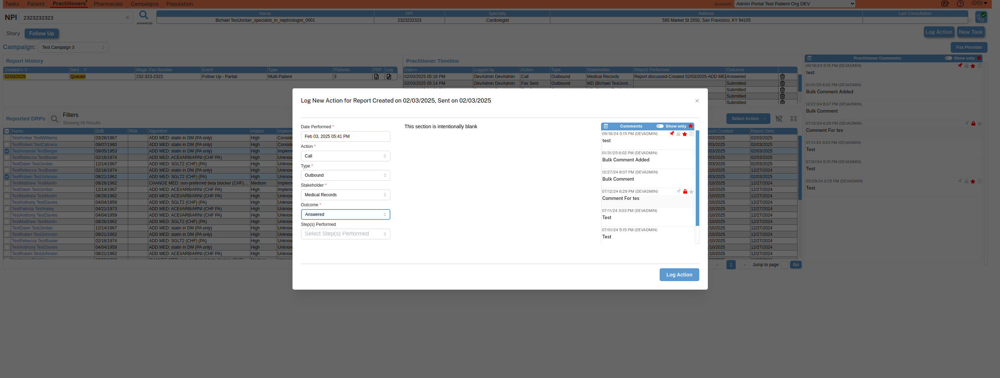Pass 5:41:45 PM Select "Discussed Practitioner Report" from Steps Performed ComboBox
Select "Discussed Practitioner Report" from Steps Performed ComboBox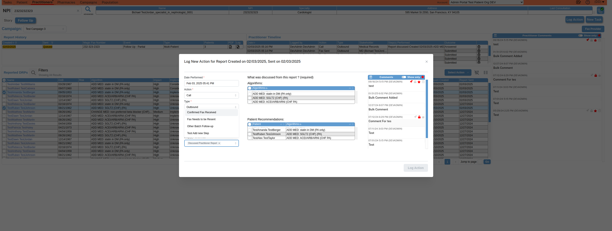Pass 5:41:46 PM Verify patients column data for respective patient in patient Recommendation table
Verify patients column data for respective patient in patient Recommendation tablePass 5:41:54 PM selects patient recommendations from the Report Discussion Selector table
selects patient recommendations from the Report Discussion Selector table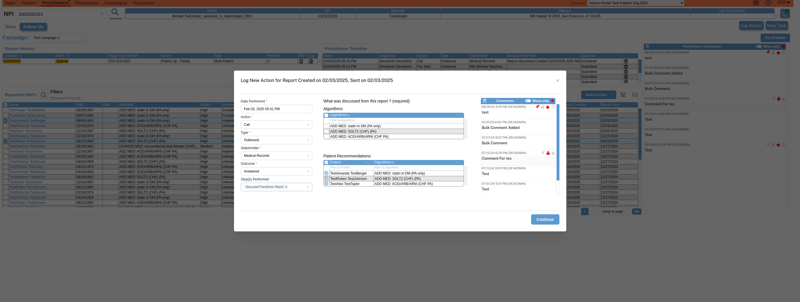Pass 5:42:05 PM Confirmation dialog Should displayed As Expected
Confirmation dialog Should displayed As Expected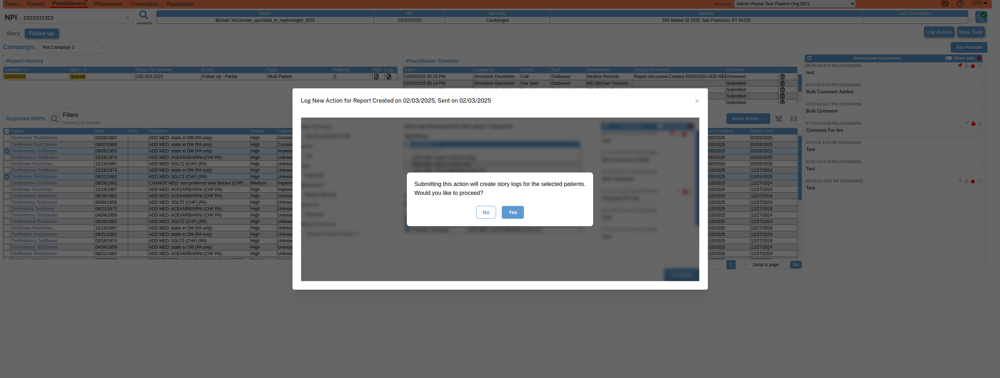Pass 5:42:05 PM User search practitioner by npi: 2323232323
User search practitioner by npi: 2323232323Pass 5:42:28 PM Click on patient search icon
Click on patient search icon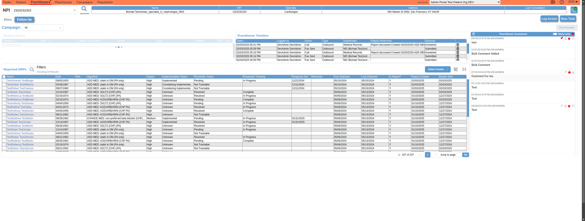Pass 5:42:45 PM Wait to page load
Wait to page loadPass 5:43:19 PM Click on button 'Follow Up' which is in campaigns button
Click on button 'Follow Up' which is in campaigns buttonPass 5:43:52 PM User select campaigns value as: Test Campaign 3
User select campaigns value as: Test Campaign 3Pass 5:44:03 PM Remove all previous applied filters from the campaigns tab by clicking the buttonClear Filters
Remove all previous applied filters from the campaigns tab by clicking the buttonClear FiltersPass 5:44:40 PM Verify user able to clear following column filters inboxes of Report History Table
Verify user able to clear following column filters inboxes of Report History Table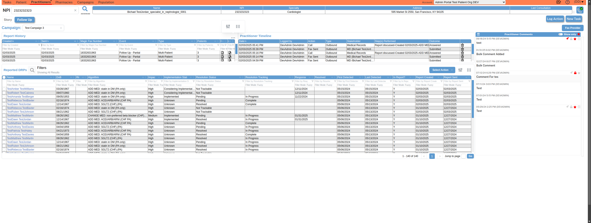Pass 5:45:13 PM User select all reported DRPs
User select all reported DRPsPass 5:45:30 PM User deselect all reported DRPs
User deselect all reported DRPsPass 5:46:04 PM Click on button 'Story' which is in campaigns button
Click on button 'Story' which is in campaigns buttonPass 5:46:21 PM Verify newly created practitioners log action 'Call' is generated on current date and time
Verify newly created practitioners log action 'Call' is generated on current date and time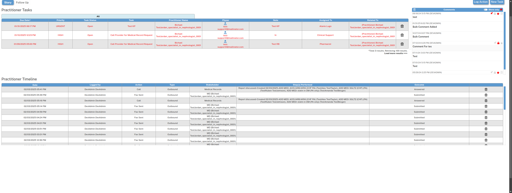Pass 5:46:37 PM Verify newly created log action for 'Outbound' in story tab for prescriber analytics feature
Verify newly created log action for 'Outbound' in story tab for prescriber analytics feature
Pass 5:46:54 PM Verify newly created log action for 'Medical Records' in story tab for prescriber analytics feature
Verify newly created log action for 'Medical Records' in story tab for prescriber analytics feature
Pass 5:47:11 PM Verify newly created log action for 'Answered' in story tab for prescriber analytics feature
Verify newly created log action for 'Answered' in story tab for prescriber analytics feature
Pass 5:47:11 PM Verify newly created practitioners log action Step(s) Performed is generated with current date and contains | TestAlex TestTaylor | | TestRuben TestJohnson | | TestAmanda TestBerger |
Verify newly created practitioners log action Step(s) Performed is generated with current date and contains | TestAlex TestTaylor | | TestRuben TestJohnson | | TestAmanda TestBerger |Pass 5:47:44 PM Delete newly created practitioner timeline log action
Delete newly created practitioner timeline log action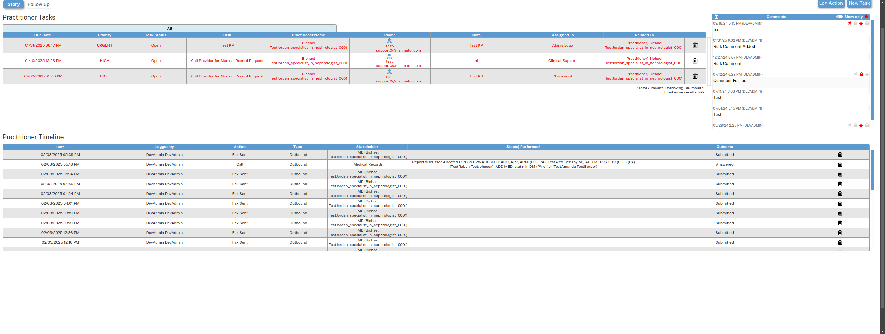Pass 5:48:17 PM Delete newly created practitioner timeline log action
Delete newly created practitioner timeline log action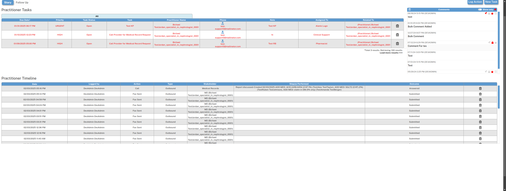 -
SETUP: Logout and Close BrowserADD MED: ACEI/ARB/ARNI (CHF PA)
17:48:17 PM / 22.979 secs
#test-id=3SETUP: Logout and Close BrowserADD MED: ACEI/ARB/ARNI (CHF PA)
02.03.2025 17:48:17 02.03.2025 17:48:40 22.979 secsReport-Algorithms-And-Patient-Query-Service.featureSETUP: Logout and Close BrowserADD MED: ACEI/ARB/ARNI (CHF PA)Status Timestamp Details Pass 5:48:40 PM User logout from the application
User logout from the applicationPass 5:48:40 PM User close browser
User close browser
-
Report-Algorithms-And-Patient-Query-Service.feature
3 tests
Report-Algorithms-And-Patient-Query-Service.feature
3 passedStatus Timestamp TestName Pass 17:27:36 PM SETUP: Launch Browser and go to application Pass 17:30:13 PM Verify_Algorithms_and_Patient_Recommendations_in_the_log_action_modal_from_Report_History Pass 17:48:17 PM SETUP: Logout and Close BrowserADD MED: ACEI/ARB/ARNI (CHF PA)
Started
Feb 3, 2025 05:27:36 PM
Ended
Feb 3, 2025 05:48:40 PM
Tests Passed
3
Tests Failed
0
Tests
Log events
Tags
| Name | Passed | Failed | Skipped | Others | Passed % |
|---|---|---|---|---|---|
| Report-Algorithms-And-Patient-Query-Service.feature | 3 | 0 | 0 | 0 | 100% |
System/Environment
| Name | Value |
|---|---|
| Author | Arine |
| Author | Arine |